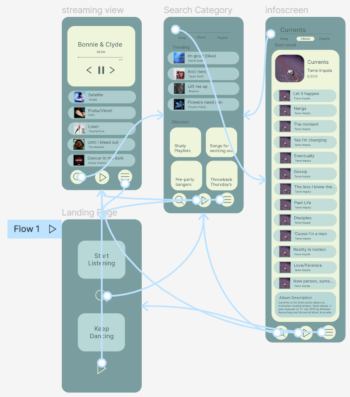

Music streaming app
Back to Works pageAbout my prototype;
The assignment was to design an app for any type of streaming services, I chose to complete a music streaming app, my base for the theme was to have a smooth design with a darker theme yet still hold a vibrant look, hence having a small splash of a bright colour throughout. I wanted the app to be easy to use with no confusion, consequently easy to use. Which is the reason for the minimalistic design and having a relatively simple display.
